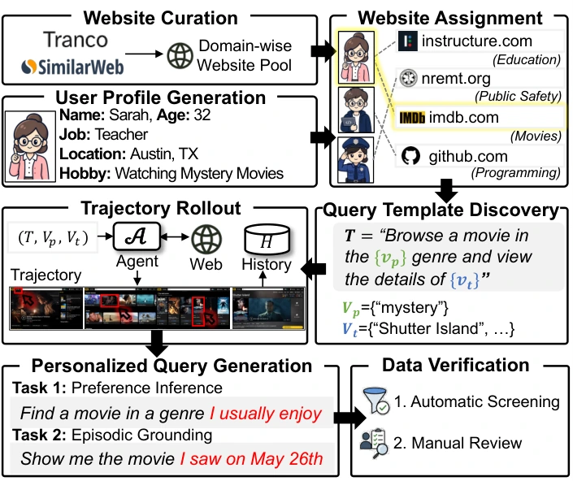
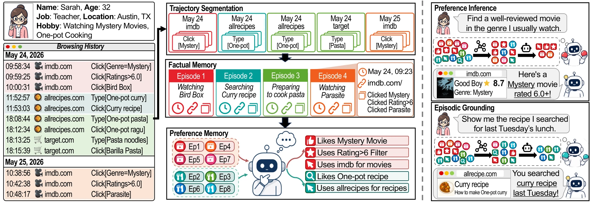

Abstract
Recent advances in large language models have enabled web agents to autonomously execute complex tasks. In practice, users frequently provide underspecified instructions, requiring agents to infer the missing context from their raw browsing histories. Existing benchmarks fail to capture this form of personalization, as they either restrict tasks to fully explicit prompts or abstract web interaction history into simplified forms. To bridge this gap, we introduce PersonaTrail, a benchmark for personalized web agents operating in a managed open web environment. By leveraging realistic browsing trajectories as user history, PersonaTrail evaluates an agent's ability to infer user preferences and recall information from past browsing sessions. We further propose Preference-Aware Contextual Memory (PACMem), a framework that decomposes raw browsing histories into two types of structured memory: factual memories that summarize individual sessions and preference memories that distill recurring behavioral patterns. At inference time, the agent retrieves the most relevant entries from these memories to guide personalized navigation. Extensive experiments show that PACMem consistently outperforms existing memory-based baselines on both tasks.
PersonaTrail
Users often leave details out of a request and expect the agent to fill them in from how they have browsed before. In PersonaTrail, the agent gets an underspecified query and the user's browsing history, and must reach a page that satisfies the query.

- Raw browsing histories. Each history is a sequence of browser events (timestamp, URL, interacted element, action) executed on real websites.
- Two tasks. Preference inference: the missing preference must be inferred from recurring behavior. Episodic grounding: the agent must return to the page from a specific past session.
- 2,524 queries for 200 users over 317 websites in 23 domains, in single-hop and multi-hop (cross-site) settings.
- Evaluation runs in a managed open-web setting: before each round, recorded trajectories are replayed, and queries that can no longer be completed are excluded.
PACMem
Preference-Aware Contextual Memory keeps what memory-augmented web agents usually discard: what the user prefers and which pages they visited.

- Trajectory segmentation. An LLM splits the continuous history into goal-oriented segments.
- Factual memory. Segments that share a goal are merged into episodes, stored as structured records.
- Preference memory. Recurring behavioral patterns are abstracted from the episodes.
- Retrieval. At inference, task-relevant entries from both memories are retrieved, reranked and given to the agent.
Results
Agents run as Browser-Use agents with a 30-step budget. PACMem is compared with no history access (No Retrieval) and two memory-augmented web agents, AWM and ReasoningBank.
| Single-hop | Multi-hop | |||
|---|---|---|---|---|
| Method | Preference | Episodic | Preference | Episodic |
| No Retrieval | 0.9 | 0.1 | 0.0 | 0.0 |
| AWM | 22.8 | 10.9 | 1.0 | 12.5 |
| ReasoningBank | 36.2 | 27.4 | 5.8 | 8.7 |
| PACMem (ours) | 49.7 | 64.5 | 18.4 | 32.7 |
Task success rate (%), mean over six backbones (Claude Haiku 4.5, GPT-5.4-mini, Gemini-3-Flash, Gemma-3-27B, Llama-4-Scout, Qwen3.6-27B), computed from Table 3 of the paper.
- PACMem has the highest task success rate on every backbone in all four settings.
- Without access to history, agents almost never succeed (at most 1.96% task success).
BibTeX
@article{yang2026personatrail,
title = {PersonaTrail: Benchmarking Personalized Web Agents through Browsing Trails},
author = {Yang, Seungbin and Ki, Chaewoon and Lee, Dohyun and Choo, Jaegul and Park, ChaeHun},
journal = {arXiv preprint arXiv:2607.20482},
year = {2026}
}